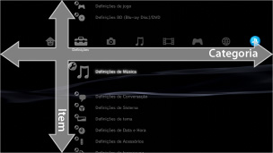
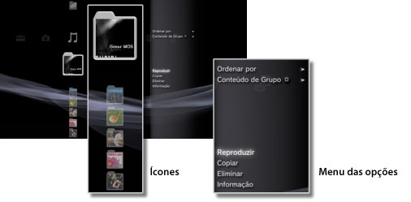
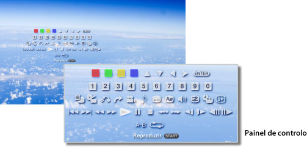

Sobre o menu XMB™ > Sobre o menu XMB™ (XrossMediaBar)
Sobre o menu XMB™ (XrossMediaBar)
Utilizar o menu XMB™
O sistema PS3™ inclui uma interface de utilizador denominada XMB™ (XrossMediaBar). A fila horizontal mostra as funcionalidades do sistema por categorias e a coluna vertical mostra os itens que podem ser executados em cada categoria.

| Botões de direcção | Selecciona uma categoria ou item. |
|---|---|
Botão  |
Confirma o item seleccionado. |
Botão  |
Cancela uma operação. |
Botão  |
Apresenta o menu das opções / painel de controlo das opções. |
| Botão PS | Visualizar o menu XMB™. |
Reproduzir conteúdo
A partir do menu XMB™, seleccione o conteúdo do disco ou suporte de armazenamento e, em seguida, prima o botão . Para parar a reprodução prima o botão .
Nota
Em alguns modelos do sistema PS3™, é necessário um adaptador USB apropriado (não incluído) para usar suportes de armazenamento.
Painel de informação
Utilizando o painel de informação apresentado no canto superior direito do ecrã, pode visualizar informações como, por exemplo, o número de Amigos que estão online, avisos sobre novas mensagens e as informações mais recentes que estão disponíveis em [Novidades].

(1) |
Avatar * |
|---|---|
(2) |
Número de Amigos que estão online * |
(3) |
Informações acerca de novo texto de conversação * |
(4) |
Informação acerca de novas mensagens |
(5) |
Data e hora |
(6) |
Ícone de ocupado |
(7) |
Informação disponível em [Novidades]* |
* Apresentada apenas com sessão iniciada na PSNSM.
Usar o menu das opções
Seleccione um ícone do menu XMB™ e, em seguida, prima o botão para visualizar o menu de opções. O menu de opções pode ser apresentado ou ocultado ao premir o botão .

Itens do menu das opções
Os itens do menu das opções variam consoante a categoria.
| Reproduzir / Iniciar / Visualização | Reproduz conteúdo. |
|---|---|
| Remover disco | Ejectar o disco. |
| Eliminar | Elimina conteúdo. |
| Copiar | Copia conteúdo para o armazenamento do sistema ou para o suporte de armazenamento.*1 |
| Informação | Apresenta informações sobre o conteúdo. Algumas informações, tal como o nome, podem ser alteradas. |
| Adicionar à lista de reprodução | Adiciona conteúdos a uma lista de reprodução. |
| Apresentar Todos | Apresenta todas as pastas guardadas num suporte de armazenamento ou num dispositivo de armazenamento em massa USB.*1 |
| Ordenar por | Ordena os itens de conteúdo por nome, data, etc. |
| Conteúdo de Grupo | Altera o método de agrupamento para agrupar por álbum, por formato ou outras opções.*2 |
| Eliminar Vários | Selecciona vários itens de conteúdo e elimina-os de uma só vez. |
| Copiar Vários | Selecciona vários itens de conteúdo e copia-os de uma só vez. |
| *1 |
Em alguns modelos do sistema PS3™, é necessário um adaptador USB apropriado (não incluído) para usar suportes de armazenamento. |
|---|---|
| *2 |
Os conteúdos sem as informações necessárias para agrupamento são agrupadas numa pasta designada [Desconhecido]. Alguns conteúdos podem não ser agrupados. |
Usar o painel de controlo das opções
Durante a reprodução do conteúdo, prima o botão para apresentar o painel de controlo. O menu de controlo das opções pode ser apresentado ou ocultado ao premir o botão . Os itens do painel de controlo das opções variam consoante o conteúdo que estiver a ser reproduzido.

Usar várias funcionalidades ao mesmo tempo
Os utilizadores podem usufruir de várias funcionalidades ao mesmo tempo. Por exemplo, pode ver imagens em  (Fotografia) ou aceder à Internet em
(Fotografia) ou aceder à Internet em  (Rede) enquanto reproduz música em
(Rede) enquanto reproduz música em  (Música).
(Música).
Exemplo: Ver imagens em (Fotografia) enquanto reproduz música em (Música)
1. |
Reproduza música em |
|---|---|
2. |
Prima o botão PS. |
3. |
Seleccione as imagens que deseja ver em |
Notas
- Não pode reproduzir conteúdo de (Música) com outras funcionalidades enquanto reproduz conteúdo de Super Audio CD ou quando
 (Definições) >
(Definições) >  (Definições de Música) > [Frequência de Saída] estiver definido para [44,1/88,2/176,4 kHz].
(Definições de Música) > [Frequência de Saída] estiver definido para [44,1/88,2/176,4 kHz]. - Dependendo do tipo de conteúdo a ser reproduzido, algumas funcionalidades que geralmente podem ser reproduzidas simultaneamente podem não estar disponíveis.
Atenção
Alguns sistemas PS3™ não reproduzem Super Audio CD. Para obter detalhes, consulte [Tipos de discos reproduzíveis].